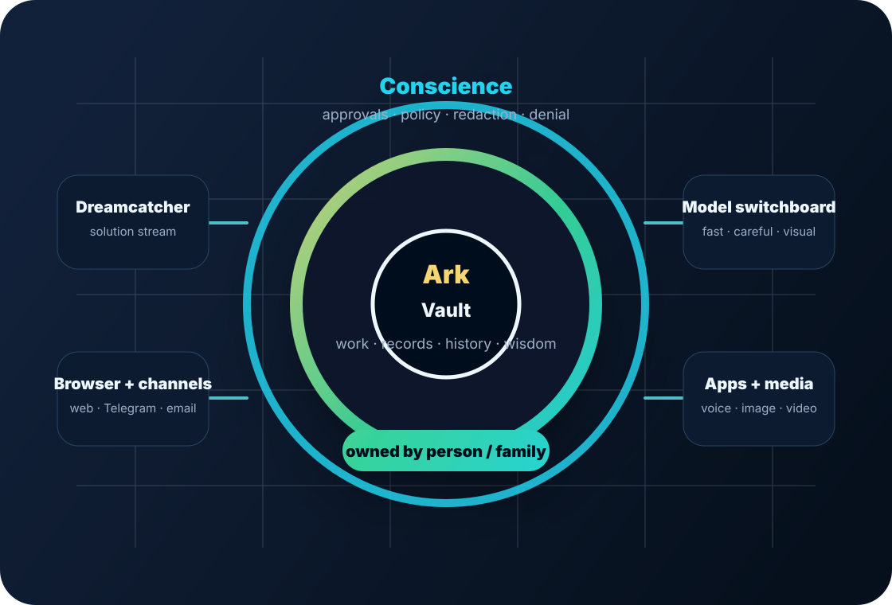

A dedicated agent home
Your agent has one coherent place for memory, files, credentials, instructions, workflows and history instead of being scattered across unrelated SaaS databases.
Dedicated agents for real work
Dreamcatcher gives you a dedicated agent that works where you already work — Telegram, WhatsApp, email and phone — with its memory, tools, approvals and operating context kept together in one portable home.
Private pilot: channel links and phone numbers are being opened in stages. Email is the current intake path.

What you are actually getting
Most AI products ask you to visit their interface. Dreamcatcher turns that around: the agent shows up through your existing communication channels, carries its own context, and can be hosted by us or moved closer to hardware you control.
Your agent has one coherent place for memory, files, credentials, instructions, workflows and history instead of being scattered across unrelated SaaS databases.
Run it with us to get started, or move it toward your own infrastructure when ownership, locality or trust boundaries matter more.
Dreamcatcher humans help supervise behavior, repair failures, improve prompts and workflows, and keep the agent useful instead of leaving you alone with a brittle bot.
We are building toward confidential computing, explicit approvals, and narrow blast zones. Until each control is live, we label it honestly.
Meet the agent where work happens
Tell us what you want the agent to do and which channel you want it to live in. We will connect you to the right pilot setup.
Message your agent in Telegram, send files and voice notes, and keep the working history in one dedicated agent home.
A real phone number for urgent handoffs, spoken instructions, and agent-mediated follow-up. Number allocation is in rollout.
Prefer not to drive the setup? Request a callback and we will help define the agent, approvals and channel boundaries with you.
Give the agent a familiar mobile surface for quick requests, supplier/customer coordination and follow-through.
The difference
Dreamcatcher agents are not sold as pure automation. They are mediated systems: software does the work it is good at, while people inspect the failure modes, tighten the instructions, improve the tools, and step in when the agent needs help.
Why Dreamcatcher
You do not need to care about the market machinery on day one. You care that your agent can get useful work done. Behind the scenes, Dreamcatcher connects needs to specifications, work packets, QA, attribution and reusable innovation.
Private pilots are open
Start with one painful recurring workflow, one channel, and one approval boundary. The first win is not a demo — it is a useful agent that keeps showing up.
Talk to an agent